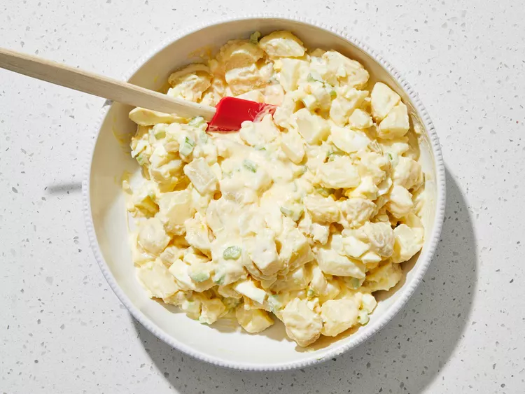

Place potatoes in a large pot and cover with salted water; bring to a boil. Reduce heat to medium-low and simmer until tender, about 20 minutes. Drain and set aside to cool.

While the potatoes are cooking, whisk together sugar, 2 beaten eggs, and cornstarch in a saucepan; season with salt.

Preheat the oven to 375 degrees F (190 degrees C). Stir ketchup, maple syrup, brown sugar, molasses, Worcestershire sauce, salt, pepper, and chili powder together in a small bowl; set aside.

Peel and dice potatoes. Transfer to a large bowl; toss with hard-cooked eggs, onion, celery, and 1 teaspoon salt.
Stir dressing gently into the bowl of potato salad until evenly coated.
 Step 6Chill before serving, 3 hours to overnight.
Recipe Tip
To make hard-boiled eggs, place eggs in a saucepan and cover with cold water. Bring to a boil, then immediately remove from the heat. Cover and let eggs stand in hot water for 10 to 12 minutes. Remove from the hot water, cool, and peel.